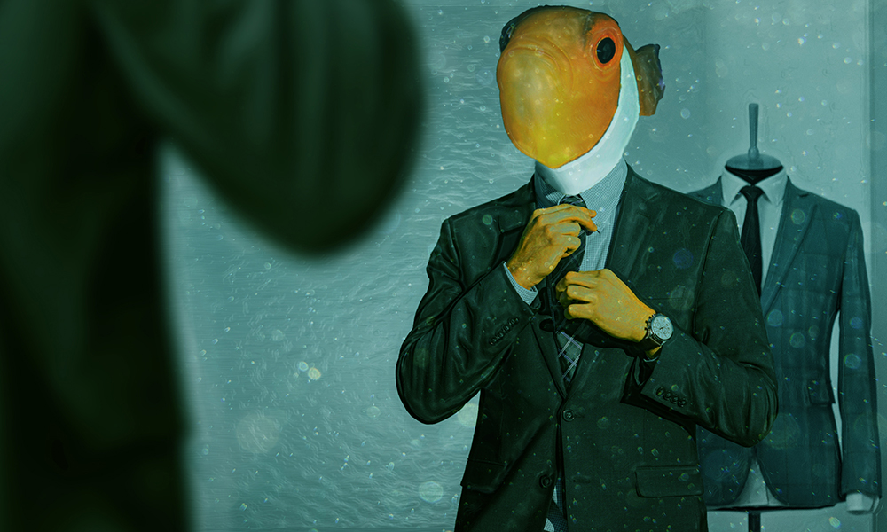
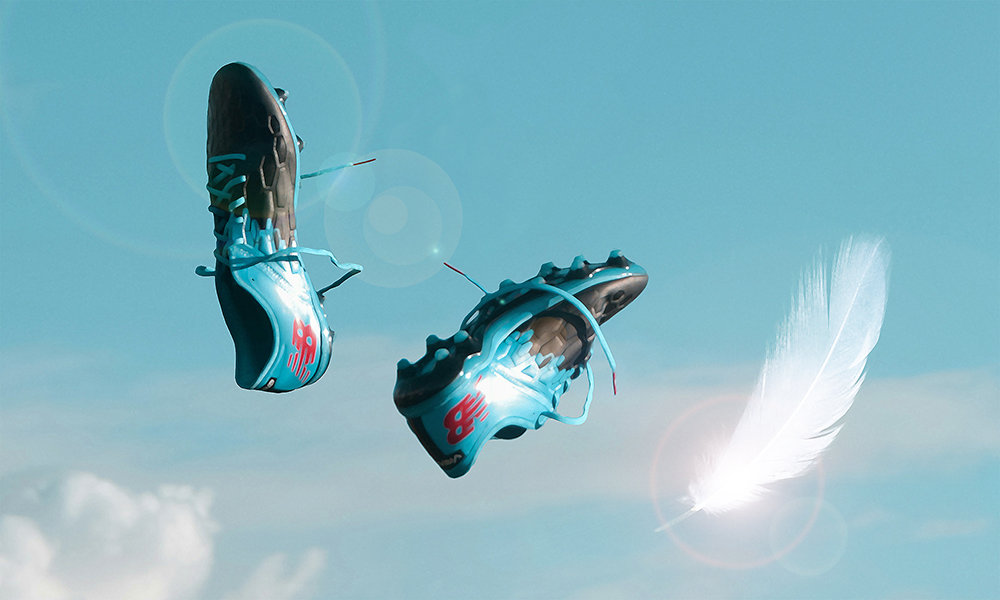
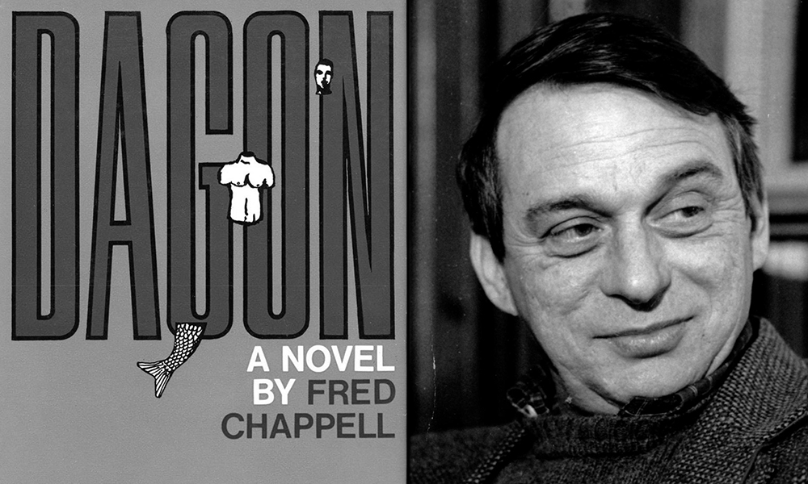

Every year or so a piece of fiction based on the mythology of Ancient Greece penetrates the barriers erected by Mythaxis' editor, so it's long past time he admitted his claimed abhorrence for this very broad sub-genre is a lie. Do it right, and he's just as happy to read it as he is anything else done right. Doing it right, LM Zaerr ventures into this rich territory with a spin on one of the truly historic takes on the transformative power of love.
The near inevitability of any given issue featuring two stories half-reflecting each other is once more upon us. Here, Dane Erbach leverages his personal experience of preparing for the unimaginable worst to unsettling effect in a high school nightmare scenario that carries the distant echo of paranoiac classics past. If a episode from the original Twilight Zone or a certain Stephen King novella leap to mind… well, at least YOU aren't alone.

Welcome back to Addison Smith, who graced our pages four years and fourteen issues ago with his techno thriller First Breath, possibly the least Addison Smith-like piece of fiction in his canon. This time we delve into one of his more typically atypical zones of interest, presenting us with seemingly familiar worlds in which something is (perhaps metaphorically, or perhaps literally) very definitely fishy…

Our second high school-era offering is much lighter in tone than its predecessor, but Elizabeth Zuckerman touches on another serious subject as she transplants an iconic fairy tale trope to that most fantasy-welcoming of contemporary environments. Countless youngsters are made miserable at a time we're told we'll feel nostalgia over for the rest of our lives, but they can beat it, with a little inner strength, and the right support network.
Your editor considers himself to have a most varied taste in science fiction, and when Mark Martin's story landed on his virtual desk it provided an infrequent experience to be immediately savoured: the extravagantly not-yet-here presented through the somehow authentic, everyday lives of real people. This contemplation of mortality and its threatened absence is philosophical and personal, and conversational in the best way.

For our latest longform review of the year, All Hail He Prophesied Since Times Before Time to Rise from the Depths in All His Awful Glory — Bill Ryan. It's easy to let the wide-spread inspiration of H. P. Lovecraft's sinister fiction drive a writer to madness (or, at least, to madness of cliché), so what is to be found in Fred Chappell's 1968 Southern Gothic take on the Cthulhu mythos?

The editor has no hair to pull out, zine components lie broken on the ground like hopes and dreams, and STILL the jewels of short fiction published these last three months are yet to be reviewed. Click here, dear reader, to discover if he did his job or merely furnished a broken link and washed his hands of the whole sorry affair.
As you may now be well aware, Mythaxis Magazine has become a platform for audio-format speculative fiction! It's fair to say that there's one man we have to thank for that: Micah Hyatt, a past contributor to these pages with fiction, poetry, and experiments in generative art, so we lured him from the studio long enough to chat a little about himself, and the voice of Mythaxis.